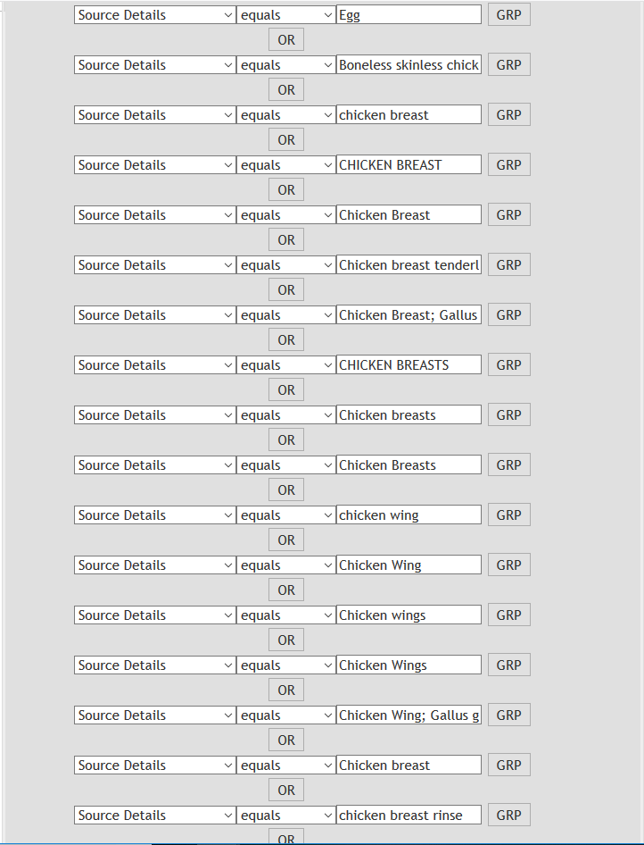
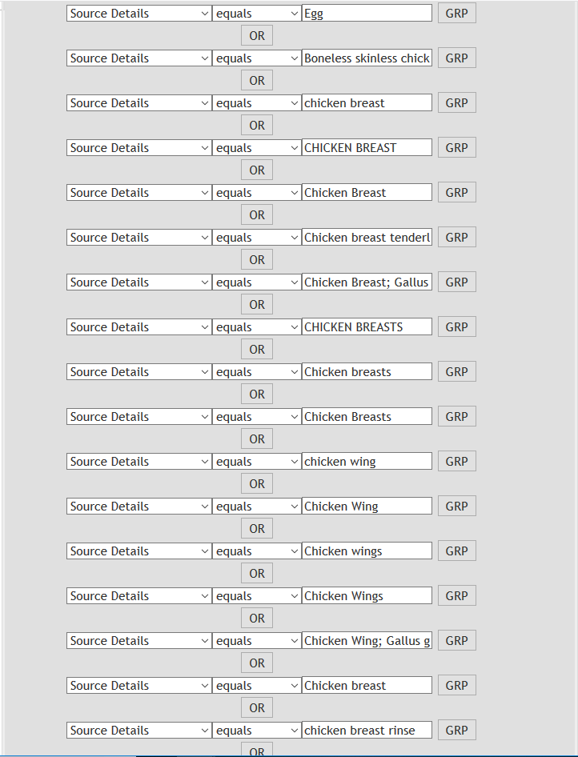

Home
Last updated: 2020-09-15
Checks: 7 0
Knit directory: Data_Skills_Project/
This reproducible R Markdown analysis was created with workflowr (version 1.6.2). The Checks tab describes the reproducibility checks that were applied when the results were created. The Past versions tab lists the development history.
Great! Since the R Markdown file has been committed to the Git repository, you know the exact version of the code that produced these results.
Great job! The global environment was empty. Objects defined in the global environment can affect the analysis in your R Markdown file in unknown ways. For reproduciblity it’s best to always run the code in an empty environment.
The command set.seed(20200412) was run prior to running the code in the R Markdown file. Setting a seed ensures that any results that rely on randomness, e.g. subsampling or permutations, are reproducible.
Great job! Recording the operating system, R version, and package versions is critical for reproducibility.
Nice! There were no cached chunks for this analysis, so you can be confident that you successfully produced the results during this run.
Great job! Using relative paths to the files within your workflowr project makes it easier to run your code on other machines.
Great! You are using Git for version control. Tracking code development and connecting the code version to the results is critical for reproducibility.
The results in this page were generated with repository version 1861a5d. See the Past versions tab to see a history of the changes made to the R Markdown and HTML files.
Note that you need to be careful to ensure that all relevant files for the analysis have been committed to Git prior to generating the results (you can use wflow_publish or wflow_git_commit). workflowr only checks the R Markdown file, but you know if there are other scripts or data files that it depends on. Below is the status of the Git repository when the results were generated:
Ignored files:
Ignored: .Rhistory
Ignored: .Rproj.user/
Note that any generated files, e.g. HTML, png, CSS, etc., are not included in this status report because it is ok for generated content to have uncommitted changes.
These are the previous versions of the repository in which changes were made to the R Markdown (analysis/index.Rmd) and HTML (docs/index.html) files. If you’ve configured a remote Git repository (see ?wflow_git_remote), click on the hyperlinks in the table below to view the files as they were in that past version.
| File | Version | Author | Date | Message |
|---|---|---|---|---|
| Rmd | 2da8cf3 | Antonia Chalka | 2020-09-15 | Added bullet points to conclusion |
| Rmd | 505bc33 | Antonia Chalka | 2020-09-15 | License & Small cosmetic changes |
| Rmd | ebc3c88 | Antonia Chalka | 2020-08-21 | Cosmetic changes |
| Rmd | 8d511b6 | Antonia Chalka | 2020-07-29 | First Draft |
| Rmd | 87734c3 | Annita | 2020-04-12 | Start workflowr project. |
library(tidyverse)
library(DT)
library(plotly)Introduction
Topic
Salmonella enterica is a promiscuous pathogen, able to infect most vertbrates and a small number of invertebrates. The bacterium can be found worldwide, with many different strains that are are to infect different combination of hosts. Thus, it is important to build models for source prediction (i.e. where interms of host an outbreak originated from), and host prediction (what species can the strain of an outbreak infect). For that purpose, there have been many studies, my PhD included, which use machine learning to build such models.
Before such models are constructed though, there is a vital step often overlooked: Data Collection. Hunderds of thousands of Salmonella enterica sequences are available online. However, the metadata itself may be missing, or ‘messy’ with misspellings, capitalisations, abbreviations and other syntactic choices. Moreover, their quality and distribution across other metadata (geographic origin, host, year collected etc) can very greatly and may introduce unexpected bias that dooms the creation of a high quality model from the get-go (the ’garbage-in, garbage-out paradigm).
Therefore, I spent the beggining of my project aquiring and cleaning such data, though to a limited extent. The purpose of this presentation is to go over that process in greater detail, characterising and justifying my dataset as well as producing high-quality visualisations.
Methods
Initial Restrictions
Because of the large diversity of S. enterica serovars (genetically distinct strains), we need to make sure that any genetic variation present is due to host, not of geospatial effects, or other causes of variation. Thus, I focused on the S. Typhimurium (STm) serovar. STm is widespread, and the number one cause of zoonotic (animal to human transmission) of Salmonella outbreaks. Though STm is considered a ‘generalist’ serovar (i.e. does not have a host preference), studies have identified host-specific clades.
In summary, our dataset must have the following characteristics:
Serovar must be Typhimurium
Same country of origin
Collected with 1995-2019
- Contain over 200 sequences for the following hosts:
- Human
- Bovine
- Poultry
- Swine
- Within hosts, sequences will be further subdivided to:
- Animal (sequences derived from clinical data/fecal samples)
- Products (sequences derived from raw meat and meat products)
- Enviromental (sequences derived from the environment, such as feed)
Acquiring Data
Enterobase is a repository of publicly available S. enterica sequences.
At first glance, there are hunderds of thousands sequenecs available!

enterobase_totals
Country-wise, it seems the UK and the USA have the most sequences.However, when looking at host data…


With that in mind, I started constructing queries for each host, where it became obvious that the data was quite messy… To demonstrate, below is one of the queries I used to capture the range:
 
 
After a lot of trail-and-error quaries, I got the following number of sequences:
read_csv("./data/STm_All_Metadata.csv") %>% datatable()Parsed with column specification:
cols(
Host = col_character(),
Country = col_character(),
Count = col_double()
)read.csv("./data/STm_All_Metadata.csv") %>% ggplot( aes(x=Host, y=Count)) +
geom_bar(stat="identity", fill="steelblue") +
geom_text(aes(label=Count), vjust=1.6, size=3.5) +
theme_bw() +
facet_grid(~Country )Refinement
After obtaining my sequences, I calculated a few quality metrics for my sequences which were irrespective of the metadata. However, the latter was still a mess…
Below is my metadata from poultry-products (i.e. the sequences obtained from the example query above), as obtained from enterobase.
messy_data <- read.delim("./data/STm_USA_ChickenProducts_Metadata.csv")
summary(messy_data) Uberstrain Name
Length:1159 Length:1159
Class :character Class :character
Mode :character Mode :character
Data.Source.Accession.No..Sequencing.Platform.Sequencing.Library.Insert.Size.Experiment.Bases.Average.Length.Status.
Length:1159
Class :character
Mode :character
Barcode Source.Niche Source.Type Source.Details
Length:1159 Length:1159 Length:1159 Length:1159
Class :character Class :character Class :character Class :character
Mode :character Mode :character Mode :character Mode :character
Collection.Year Collection.Month Collection.Day Collection.Time
Min. :2002 Min. : 1.000 Mode:logical Mode:logical
1st Qu.:2009 1st Qu.: 3.000 NA's:1159 NA's:1159
Median :2012 Median : 6.000
Mean :2012 Mean : 5.513
3rd Qu.:2017 3rd Qu.: 7.000
Max. :2019 Max. :12.000
NA's :1122
Continent Country Region District
Length:1159 Length:1159 Length:1159 Length:1159
Class :character Class :character Class :character Class :character
Mode :character Mode :character Mode :character Mode :character
City Post.Code Latitude Longitude
Length:1159 Mode:logical Min. :39.80 Min. :-111.60
Class :character NA's:1159 1st Qu.:42.70 1st Qu.: -75.30
Mode :character Median :42.70 Median : -73.70
Mean :42.36 Mean : -82.46
3rd Qu.:42.70 3rd Qu.: -73.70
Max. :42.70 Max. : -73.70
NA's :1142 NA's :1137
Serovar Subspecies Disease Antigenic.Formulas
Length:1159 Length:1159 Mode:logical Length:1159
Class :character Class :character NA's:1159 Class :character
Mode :character Mode :character Mode :character
Lab.Contact Phage.Type Comment Bio.Project.ID
Length:1159 Mode:logical Mode:logical Length:1159
Class :character NA's:1159 NA's:1159 Class :character
Mode :character Mode :character
Project.ID Sample.ID Secondary.Sample.ID Date.Entered
Length:1159 Length:1159 Length:1159 Length:1159
Class :character Class :character Class :character Class :character
Mode :character Mode :character Mode :character Mode :character
Release.Date Status Coverage N50
Length:1159 Length:1159 Min. : 20.00 Min. : 36398
Class :character Class :character 1st Qu.: 66.00 1st Qu.:154645
Mode :character Mode :character Median : 85.00 Median :227451
Mean : 88.76 Mean :218462
3rd Qu.:103.00 3rd Qu.:279432
Max. :359.00 Max. :588742
Length Species Contig.Number...200.bp. Low.Quality.Bases
Min. :4675072 Length:1159 Min. : 39.00 Min. : 338
1st Qu.:4937103 Class :character 1st Qu.: 71.00 1st Qu.: 3465
Median :4983232 Mode :character Median : 82.00 Median : 6067
Mean :4988482 Mean : 92.15 Mean : 14157
3rd Qu.:5051122 3rd Qu.:100.00 3rd Qu.: 15200
Max. :5488352 Max. :583.00 Max. :224269
Version Assembly.Barcode
Min. :2.200 Length:1159
1st Qu.:2.200 Class :character
Median :3.410 Mode :character
Mean :3.191
3rd Qu.:3.610
Max. :4.100
Capitalisation, mispellings, abbreviations… Have to clean all this up. Though I could QC based on metrics alone, I wanted to have a neater picture of my whole dataset.
So, I imported my datasets in openrefine (version 3.3). I won’t go into boring detail about the data cleanig progress, but in broad strokes: * combined metadata and sequence quality metrics * cleaned up abbreviations, mispellings, cases etc… (took majority of my time) - also transformed/added a few columns based on data above (eg 2 letter code for states) * filtered my dataset according to my quality metric cuttoffs
After cleaning the data, the end result is much neater:
clean_data <- read.csv("./data/metadata_quast_all_merged_filtered_discarded.csv")
summary(clean_data) Assembly Filename X..contigs.....0.bp.
Length:3313 Length:3313 Min. : 36.0
Class :character Class :character 1st Qu.: 74.0
Mode :character Mode :character Median : 86.0
Mean : 93.4
3rd Qu.:103.0
Max. :472.0
X..contigs.....1000.bp. X..contigs.....5000.bp. X..contigs.....10000.bp.
Min. : 18.0 Min. : 14.00 Min. : 13.0
1st Qu.: 48.0 1st Qu.: 37.00 1st Qu.: 33.0
Median : 54.0 Median : 42.00 Median : 38.0
Mean : 61.2 Mean : 47.86 Mean : 42.8
3rd Qu.: 67.0 3rd Qu.: 52.00 3rd Qu.: 47.0
Max. :241.0 Max. :147.00 Max. :124.0
X..contigs.....25000.bp. X..contigs.....50000.bp. Total.length.....0.bp.
Min. :13.00 Min. :10.00 Min. :4527406
1st Qu.:29.00 1st Qu.:22.00 1st Qu.:4910518
Median :32.00 Median :24.00 Median :4963434
Mean :35.31 Mean :25.13 Mean :4968329
3rd Qu.:39.00 3rd Qu.:28.00 3rd Qu.:5020735
Max. :76.00 Max. :42.00 Max. :5543262
Total.length.....1000.bp. Total.length.....5000.bp. Total.length.....10000.bp.
Min. :4521972 Min. :4508798 Min. :4409118
1st Qu.:4898978 1st Qu.:4873666 1st Qu.:4840889
Median :4951017 Median :4923186 Median :4890094
Mean :4955303 Mean :4925449 Mean :4889892
3rd Qu.:5007088 3rd Qu.:4976309 3rd Qu.:4937721
Max. :5491025 Max. :5417711 Max. :5295274
Total.length.....25000.bp. Total.length.....50000.bp. X..contigs
Min. :3700817 Min. :2492096 Min. : 27.00
1st Qu.:4706860 1st Qu.:4304359 1st Qu.: 56.00
Median :4788268 Median :4482802 Median : 65.00
Mean :4759212 Mean :4384804 Mean : 71.19
3rd Qu.:4854221 3rd Qu.:4600673 3rd Qu.: 78.00
Max. :5220723 Max. :4989448 Max. :291.00
Largest.contig Total.length Reference.length GC....
Min. : 159757 Min. :4525725 Min. :4809037 Min. :51.59
1st Qu.: 460854 1st Qu.:4904449 1st Qu.:4809037 1st Qu.:52.09
Median : 603471 Median :4957037 Median :4809037 Median :52.12
Mean : 578158 Mean :4962110 Mean :4809037 Mean :52.12
3rd Qu.: 707849 3rd Qu.:5014641 3rd Qu.:4809037 3rd Qu.:52.15
Max. :1804610 Max. :5504721 Max. :4809037 Max. :52.37
Reference.GC.... N50.x NG50 N75
Min. :52.09 Min. : 50766 Min. : 52391 Min. : 26405
1st Qu.:52.09 1st Qu.:172545 1st Qu.:180711 1st Qu.: 85394
Median :52.09 Median :223068 Median :225951 Median :108413
Mean :52.09 Mean :222048 Mean :228727 Mean :113467
3rd Qu.:52.09 3rd Qu.:277990 3rd Qu.:282293 3rd Qu.:149858
Max. :52.09 Max. :758171 Max. :758171 Max. :387993
NG75 L50 LG50 L75
Min. : 26405 Min. : 2.000 Min. : 2.000 Min. : 4.00
1st Qu.: 90835 1st Qu.: 6.000 1st Qu.: 6.000 1st Qu.:12.00
Median :125743 Median : 7.000 Median : 7.000 Median :15.00
Mean :124461 Mean : 8.511 Mean : 8.109 Mean :17.57
3rd Qu.:150128 3rd Qu.: 9.000 3rd Qu.: 9.000 3rd Qu.:19.00
Max. :387993 Max. :34.000 Max. :30.000 Max. :70.00
LG75 X..misassemblies X..misassembled.contigs
Min. : 4.00 Min. : 53.00 Min. :10.00
1st Qu.:12.00 1st Qu.: 73.00 1st Qu.:21.00
Median :14.00 Median : 76.00 Median :23.00
Mean :16.41 Mean : 75.81 Mean :24.68
3rd Qu.:18.00 3rd Qu.: 79.00 3rd Qu.:27.00
Max. :60.00 Max. :110.00 Max. :49.00
Misassembled.contigs.length X..local.misassemblies X..scaffold.gap.ext..mis.
Min. :2319242 Min. :105.0 Min. :0.0000
1st Qu.:4038381 1st Qu.:126.0 1st Qu.:0.0000
Median :4281713 Median :129.0 Median :0.0000
Mean :4160478 Mean :128.5 Mean :0.1639
3rd Qu.:4413203 3rd Qu.:131.0 3rd Qu.:0.0000
Max. :4688963 Max. :150.0 Max. :2.0000
X..scaffold.gap.loc..mis. X..unaligned.mis..contigs X..unaligned.contigs
Min. :0.0000 Min. :0.000 Length:3313
1st Qu.:0.0000 1st Qu.:1.000 Class :character
Median :0.0000 Median :2.000 Mode :character
Mean :0.2877 Mean :1.814
3rd Qu.:0.0000 3rd Qu.:2.000
Max. :9.0000 Max. :9.000
Unaligned.length Genome.fraction.... Duplication.ratio X..N.s.per.100.kbp
Min. : 345332 Min. :86.09 Min. :1.001 Min. : 0.000
1st Qu.: 662747 1st Qu.:87.93 1st Qu.:1.001 1st Qu.: 0.000
Median : 716600 Median :88.04 Median :1.002 Median : 0.410
Mean : 719864 Mean :88.04 Mean :1.002 Mean : 2.815
3rd Qu.: 768994 3rd Qu.:88.15 3rd Qu.:1.002 3rd Qu.: 4.750
Max. :1229487 Max. :88.85 Max. :1.010 Max. :29.450
X..mismatches.per.100.kbp X..indels.per.100.kbp Largest.alignment
Min. :1248 Min. :23.00 Min. : 76576
1st Qu.:1305 1st Qu.:26.19 1st Qu.:129123
Median :1307 Median :26.34 Median :148107
Mean :1309 Mean :26.34 Mean :164618
3rd Qu.:1310 3rd Qu.:26.52 3rd Qu.:196297
Max. :1526 Max. :30.14 Max. :261258
Total.aligned.length NA50 NGA50 NA75
Min. :4146441 Min. :27503 Min. :30019 Min. : 7599
1st Qu.:4233846 1st Qu.:51133 1st Qu.:53837 1st Qu.:19108
Median :4239864 Median :57185 Median :57442 Median :24652
Mean :4240127 Mean :54351 Mean :56344 Mean :23198
3rd Qu.:4246875 3rd Qu.:57947 3rd Qu.:58646 3rd Qu.:26261
Max. :4286460 Max. :81447 Max. :81447 Max. :41786
NGA75 LA50 LGA50 LA75
Min. :13083 Min. :19.00 Min. :21.00 Min. : 39.00
1st Qu.:26261 1st Qu.:27.00 1st Qu.:26.00 1st Qu.: 57.00
Median :28752 Median :29.00 Median :27.00 Median : 60.00
Mean :27732 Mean :29.71 Mean :28.29 Mean : 62.93
3rd Qu.:30999 3rd Qu.:31.00 3rd Qu.:29.00 3rd Qu.: 65.00
Max. :37429 Max. :59.00 Max. :50.00 Max. :139.00
LGA75 Source.Host Source.Context Uberstrain
Min. : 43.0 Length:3313 Length:3313 Length:3313
1st Qu.: 54.0 Class :character Class :character Class :character
Median : 55.0 Mode :character Mode :character Mode :character
Mean : 58.1
3rd Qu.: 59.0
Max. :106.0
Name
Length:3313
Class :character
Mode :character
Data.Source.Accession.No..Sequencing.Platform.Sequencing.Library.Insert.Size.Experiment.Bases.Average.Length.Status.
Length:3313
Class :character
Mode :character
Sequencing.Platform.s. Barcode Source.Details Collection.Year
Length:3313 Length:3313 Length:3313 Min. :1998
Class :character Class :character Class :character 1st Qu.:2009
Mode :character Mode :character Mode :character Median :2014
Mean :2013
3rd Qu.:2017
Max. :2019
Collection.Month Collection.Day Continent Country
Min. : 1.000 Min. : 1.00 Length:3313 Length:3313
1st Qu.: 2.000 1st Qu.: 6.00 Class :character Class :character
Median : 5.000 Median : 8.00 Mode :character Mode :character
Mean : 5.566 Mean :10.09
3rd Qu.: 9.000 3rd Qu.:13.00
Max. :12.000 Max. :22.00
NA's :2347 NA's :3302
Region State_Code District City
Length:3313 Length:3313 Length:3313 Length:3313
Class :character Class :character Class :character Class :character
Mode :character Mode :character Mode :character Mode :character
Latitude Longitude Serovar Subspecies
Min. :31.95 Min. :-123.00 Length:3313 Length:3313
1st Qu.:37.09 1st Qu.:-111.60 Class :character Class :character
Median :42.30 Median : -95.71 Mode :character Mode :character
Mean :40.43 Mean : -96.78
3rd Qu.:42.70 3rd Qu.: -75.30
Max. :45.54 Max. : -71.00
NA's :3268 NA's :3236
Antigenic.Formulas Lab.Contact Lab.Contact.1 Lab.Contact.2
Length:3313 Length:3313 Length:3313 Length:3313
Class :character Class :character Class :character Class :character
Mode :character Mode :character Mode :character Mode :character
Lab.Contact.3 Bio.Project.ID Project.ID Sample.ID
Length:3313 Length:3313 Length:3313 Length:3313
Class :character Class :character Class :character Class :character
Mode :character Mode :character Mode :character Mode :character
Secondary.Sample.ID Date.Entered Release.Date Status
Length:3313 Length:3313 Length:3313 Length:3313
Class :character Class :character Class :character Class :character
Mode :character Mode :character Mode :character Mode :character
Coverage N50.y Length Species
Min. : 19.00 Min. : 49270 Min. :4527406 Length:3313
1st Qu.: 67.00 1st Qu.:172545 1st Qu.:4910306 Class :character
Median : 86.00 Median :223067 Median :4963434 Mode :character
Mean : 93.25 Mean :221865 Mean :4968164
3rd Qu.:109.00 3rd Qu.:277921 3rd Qu.:5020449
Max. :611.00 Max. :758171 Max. :5543262
Contig.Number...200.bp. Low.Quality.Bases Version
Min. : 32.00 Min. : 338 Min. :2.000
1st Qu.: 70.00 1st Qu.: 3380 1st Qu.:2.200
Median : 80.00 Median : 6109 Median :3.410
Mean : 86.63 Mean : 14323 Mean :3.231
3rd Qu.: 95.00 3rd Qu.: 17414 3rd Qu.:4.000
Max. :367.00 Max. :224269 Max. :4.100
Analysis
Goal: What do I have in my dataset, and is it appropriate for my reserach? (What is appropriate for my reserach in the first place?)
General Points of Interest
Host: At least 100 sequences per host, and good spread across subcategories (especially in animal/products, environmental is interesting to examine but not vital)
Organisation: Due to different collection and analysis methods, the majority of my sequences should come from govermental agencies, such as the CDC for clinical samples or the FDA for food samples.
State: Geographically, how are my sequences spread out? Natural variations will occur due to districution of famrs and loivestock across the country, but I need to make sure that I dont have any extreme cases such as 90% of my swine product sequences coming from the same farm.
Chronology: When where my samples collected? I expect an increase in sequences collected from year to year, following advances in next-gen sequencing.
Host
host_plot <- clean_data %>% count(Source.Host,Source.Context) %>%
ggplot(aes(x=Source.Host,y=n,fill=Source.Context, label=n)) +
geom_bar(stat="identity") +
labs(title="STm Sequences Collected in the United States by Host", y="Num. of Sequences", x="Host", fill="Host Context") +
theme_bw() +
geom_text(size = 3, position = position_stack(vjust = 0.5))
ggplotly(host_plot)From the get-go we can see the following:
Environmental samples make the minority of all samples within poultry and bovine, with none in human and swine.
All of the human sequences are clinical
The majority of sequences within bovine and swine are animal/clinical, whereas most in poultry are derived from meat products
Overall, I have passed my thershold for number of sequences across all hosts. Moreover, I have over 100 sequences in meat products alone across hosts (humans excluded for obvious reasons), that it may be possible to investigate if there is any selection of STm sequences when moving from animal to product.
Organisation
Host
org_host_plot <- clean_data %>% count(Lab.Contact.1, Source.Host) %>%
ggplot(aes(x=Lab.Contact.1, y=n, fill=Source.Host)) +
geom_bar(stat ="identity") +
labs(title="STm Sequences Collected in the United States",y="Num. of Sequences", x="Collection Agency/Laboratory", fill="Host")+
theme_bw() +
theme(axis.text.x = element_text(angle = 90, vjust = 0.5, hjust=1))
ggplotly(org_host_plot)Roughly 2000 (~60%) sequences came from sub-branches within FDA, and 1050 (~32%) from the US Department of Argiculture (FSIS).
Most of the livestock sequences come from those two agencies, whereas the human sequences are scattered across agenceis, the CDC and Universities.
Sub-Branches
org_plot_subbranch <- clean_data %>% count(Lab.Contact.1, Lab.Contact.2) %>%
ggplot(aes(x=Lab.Contact.1, y=n, fill=Lab.Contact.2)) +
geom_bar(stat ="identity") +
labs(title="STm Sequences Collected in the United States", y= "Number of Sequences", x="Collection Agency/Laboratory",fill="Sub-Branch")+
theme_bw() +
theme(axis.text.x = element_text(angle = 90, vjust = 0.5, hjust=1))
ggplotly(org_plot_subbranch)From the abbove we can see half the FDA sequences came from the Center for Food Safety and Applied Nutrition, whereas all the seuences from the USDA came from FSIS.
The CDS sequences are also split, with the majority coming from the more general Enteric Diseases Laboratory Branch, and the rest from a specific sub-section of the aforementioned lab, Pulsenet, which aims to cluster diseases to detect outbreaks.
Overall, most of my livestock sequences come from two goverment agencies, as desired. Human sequences however are a more mixed bag.
Because of the overal low number of human sequences I have and how they are distributed, I will not be discarding any sequences at this stage. However, this will be something to keep in mind to investigate further down the road when refining my models.
State
# https://plotly.com/r/choropleth-maps/#using-builtin-country-and-state-geometries
#Get counts of sequences by state and host, then pivot from long to wide format (with respect to host), and put empty cells as 0), AND calculate sum of seqs across hosts
state_data <- clean_data %>% count(State_Code, Source.Host) %>% pivot_wider(names_from = Source.Host, values_from = n, values_fill=list(n=0)) %>% mutate(total_seqs = rowSums(.[2:5]))
state_data %>% datatable()# set what text appears when hovering over in interactive geo map
state_data$hover<- with(state_data, paste(State_Code, '<br>',
"Bovine Seqs: ", Bovine, '<br>',
"Poultry Seqs: ", Poultry, '<br>',
"Swine Seqs.: " , Swine, '<br>',
"Human Seqs.: " , Human, '<br>'
))
# give state boundaries a white border
l <- list(color = toRGB("white"), width = 2)
# specify some map projection/options
g <- list(
scope = 'usa',
projection = list(type = 'albers usa'),
showlakes = TRUE,
lakecolor = toRGB('white')
)
#make plot
plot_geo(state_data, locationmode = 'USA-states') %>%
add_trace(
z = ~total_seqs, text = ~hover, locations = ~State_Code,
color = ~total_seqs, colors = 'Reds') %>%
colorbar(title = "STm Sequences") %>%
layout(
title = 'STm Sequences collected Across USA States between 1998-2019',
geo = g
)Warning: `arrange_()` is deprecated as of dplyr 0.7.0.
Please use `arrange()` instead.
See vignette('programming') for more help
This warning is displayed once every 8 hours.
Call `lifecycle::last_warnings()` to see where this warning was generated.Overall, 189 of our sequences did not have state data.
As we can see Minnesota was the state with the highest number of sequences recorded, with 453 (~14%) of our sequences. As a first look, I believe things are ok distribution wise, but if I wanted to be more thorough, I would need to consult someone more familiar with US livestock or who is more familiar with Salmonella sampling methods (i.e. more research/ expert input may be needed).
Chronology
#bar chart with hosts coloured differently and difference of 1 year
#https://plotly.com/ggplot2/geom_bar/
# Count seqs per year and host and plot as bar chart
time_plot <- clean_data %>% count(Collection.Year, Source.Host) %>%
ggplot(aes(x=Collection.Year,y=n,fill=Source.Host)) +
geom_bar(stat ="identity") +
labs(title="STm Sequences Collected in the United States", x="Collection Year", y="Sequences", fill="Host")+
theme_bw()
#make plot interactive
ggplotly(time_plot)Generally, more Salmonella camples collected with each year, though when split up by hosts, some different patterns emerge:
Poultry follows the general trendline with collected sequences increasing each year
Swine sequence collection is overall the same, though with peaks and lows
Most bovine sequences were collected in 2007, with more other collected sequences scattered throughout the years
Human sequence collection is also sporadic, with most sequences clustered to certain years
The collection process is dependent on many factors, including outbreaks, monitoring guidelines and (to an extent) pure chance. It would be good to compare to historic outreak data, which may have resulted in more intense sample collection, as well as host/context-specific monitoring guidelines which may explain differences.
Overall though, sequences across hosts are spread across years, and despite diferent patterns, I do not believe that will be a cause of concern for my dataset.
Conclusion
Overall, my expectaions were met, and though there may ares to examine further in the future while refining my models, I can currently say that my dataset will be adequate:
The dataset sequences are distributed across hosts, with over 500 sequences per host and with the poultry dataset dwarfing all others.
The vast majority of my sequences were collected from goverment agencies
Livestock sequences were chiefly collected from monitoring agenceis such as the USDA and FDA
Human sequences were a mix of CDC, FDA and various lab groups.
The majority of sequences had associated regional data. Minessota had the biggest minority of sequences (~14%) and abot half of the swine sequences.
Chronologically, the general trendline is an increase in sequences collected in latter years.
sessionInfo()R version 4.0.2 (2020-06-22)
Platform: x86_64-w64-mingw32/x64 (64-bit)
Running under: Windows 10 x64 (build 18362)
Matrix products: default
locale:
[1] LC_COLLATE=English_United Kingdom.1252
[2] LC_CTYPE=English_United Kingdom.1252
[3] LC_MONETARY=English_United Kingdom.1252
[4] LC_NUMERIC=C
[5] LC_TIME=English_United Kingdom.1252
attached base packages:
[1] stats graphics grDevices utils datasets methods base
other attached packages:
[1] plotly_4.9.2.1 DT_0.15 forcats_0.5.0 stringr_1.4.0
[5] dplyr_1.0.2 purrr_0.3.4 readr_1.3.1 tidyr_1.1.2
[9] tibble_3.0.3 ggplot2_3.3.2 tidyverse_1.3.0 workflowr_1.6.2
loaded via a namespace (and not attached):
[1] Rcpp_1.0.5 lubridate_1.7.9 assertthat_0.2.1 rprojroot_1.3-2
[5] digest_0.6.25 R6_2.4.1 cellranger_1.1.0 backports_1.1.9
[9] reprex_0.3.0 evaluate_0.14 httr_1.4.2 pillar_1.4.6
[13] rlang_0.4.7 lazyeval_0.2.2 readxl_1.3.1 rstudioapi_0.11
[17] data.table_1.13.0 whisker_0.4 blob_1.2.1 rmarkdown_2.3
[21] labeling_0.3 htmlwidgets_1.5.1 munsell_0.5.0 broom_0.7.0
[25] compiler_4.0.2 httpuv_1.5.4 modelr_0.1.8 xfun_0.16
[29] pkgconfig_2.0.3 htmltools_0.5.0 tidyselect_1.1.0 fansi_0.4.1
[33] viridisLite_0.3.0 crayon_1.3.4 dbplyr_1.4.4 withr_2.2.0
[37] later_1.1.0.1 grid_4.0.2 jsonlite_1.7.0 gtable_0.3.0
[41] lifecycle_0.2.0 DBI_1.1.0 git2r_0.27.1 magrittr_1.5
[45] scales_1.1.1 cli_2.0.2 stringi_1.4.6 farver_2.0.3
[49] fs_1.5.0 promises_1.1.1 xml2_1.3.2 ellipsis_0.3.1
[53] generics_0.0.2 vctrs_0.3.3 RColorBrewer_1.1-2 tools_4.0.2
[57] glue_1.4.2 crosstalk_1.1.0.1 hms_0.5.3 yaml_2.2.1
[61] colorspace_1.4-1 rvest_0.3.6 knitr_1.29 haven_2.3.1